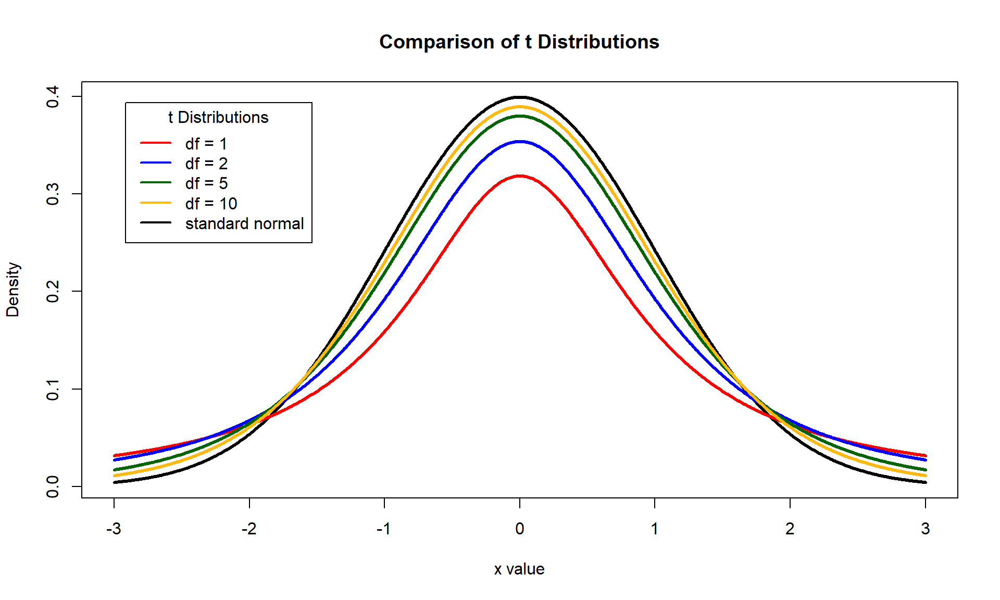

Last week we introduced the confidence interval which is used to estimate a parameter with an interval of values. We can choose how wide to make the confidence interval by selecting the confidence level - which is the probability that the interval will contain the true parameter value before the data are gathered. The confidence level is controlled via the standard score \(z\). The standard score gives the number of standard errors to add and subtract from our estimate. Therefore, we must look up the appropriate standard score \(z\) from the standard normal table.
From last week we saw that for a \(95\%\) confidence interval, we must add and subtract approximately \(z=2\) standard errors from our estimate \(\bar{x}\) or \(\hat{p}\). \(z\) is sometimes referred to as the critical value. The critical value denotes the upper and lower bounds of the confidence interval. In general, if we wish to compute the \((1-\alpha)\%\) confidence interval for the statistics \(\bar{x}\) or \(\hat{p}\), then we must add and subtract \(z_{1-\alpha/2}\) standard errors. The quantity \(\alpha/2\) denotes the area that is divided amongst the two tails of the standard normal distribution.
For example, for a \(90\%\) confidence \(\alpha = 0.1\), and the corresponding critical value is \(z_{1-0.1/2} = z_{0.95}\) which is the 95th percentile from the standard normal distribution. The table below gives several confidence levels, the corresponding values of \(\alpha\) and critical values.
| Confidence Level | \(\alpha\) | critical value: \(z_{1-\alpha/2}\) |
|---|---|---|
| \(80\%\) | 0.20 | 1.28 |
| \(85\%\) | 0.15 | 1.44 |
| \(90\%\) | 0.10 | 1.64 |
| \(95\%\) | 0.05 | 1.96 |
| \(99\%\) | 0.01 | 2.58 |
Recall the confidence interval that we introduced for estimating the population mean:
\[ \bar{x} \pm z\frac{\sigma}{\sqrt{n}} \]
The confidence interval above is based on the assumption that the population standard deviation \(\sigma\) is known. When \(\sigma\) is known the sampling distribution of the \(\bar{x}\) is approximately \(N(\mu, \sigma/\sqrt{n})\). However, we rarely know the value of \(\sigma\) so we must approximate its value with the sample standard deviation \(s\) to get
\[ \bar{x} \pm z\frac{s}{\sqrt{n}} \]
Unfortunately, the confidence level of the confidence interval above will tend to be less than specified. As a result, more confidence intervals will fail to cover the true parameter value than expected.
Figure: Each point represents the sample mean from a hypothetical sample of 5 college students. The whiskers extending from each point give the coverage of the confidence interval computed for each sample. The black dotted line gives the value of hypothetical population mean time spent on social media. The CI’s highlighted in red represent those that fail to capture the population mean
Based on the plot and example above, the actual proportion of confidence intervals that fail to capture the population mean is \(12\%\), which is much higher than the expected frequency of only \(5\%\). This occurs because the sampling distribution of \(\bar{x}\) no longer follows a normal distribution. When we substitute \(s/\sqrt{n}\) for \(\sigma/\sqrt{n}\) the sampling distribution of \(\bar{x}\) changes to a distribution called the \(t\)-distribution.
Like the normal distribution, the \(t\) distribution is a bell curve but it has “heavier tails” - that is to say, it has more probability density in the tails of the distribution.

The amount of probability density in the tails of a \(t\) distribution is controlled by the degrees of freedom of the distribution. The confidence interval for \(\mu\) that uses \(s/\sqrt{n}\) instead of \(\sigma/\sqrt{n}\) is given by
\[ \bar{x} \pm t\frac{s}{\sqrt{n}} \]
The quantity \(t\) is called the \(t\)-score and is the \(1-\alpha/2\) percentile of \(t\)-distribution with \(n-1\) degrees of freedom denoted \(t(n-1)\). Like the standard score \(z\), we must look up the \(t\)-score corresponding to the desired confidence level from a \(t\)-distribution table:
| Upper tail | 0.25 | 0.2 | 0.15 | 0.125 | 0.1 | 0.075 | 0.05 | 0.025 | 0.005 | 0.0025 | 5e-04 |
|---|---|---|---|---|---|---|---|---|---|---|---|
| Two tail | 0.5 | 0.4 | 0.3 | 0.25 | 0.2 | 0.15 | 0.1 | 0.05 | 0.01 | 0.005 | 0.001 |
| \(DF\) | |||||||||||
| 1 | 1 | 1.376 | 1.963 | 2.414 | 3.078 | 4.165 | 6.314 | 12.706 | 63.657 | 127.321 | 636.619 |
| 2 | 0.816 | 1.061 | 1.386 | 1.604 | 1.886 | 2.282 | 2.92 | 4.303 | 9.925 | 14.089 | 31.599 |
| 3 | 0.765 | 0.978 | 1.25 | 1.423 | 1.638 | 1.924 | 2.353 | 3.182 | 5.841 | 7.453 | 12.924 |
| 4 | 0.741 | 0.941 | 1.19 | 1.344 | 1.533 | 1.778 | 2.132 | 2.776 | 4.604 | 5.598 | 8.61 |
| 5 | 0.727 | 0.92 | 1.156 | 1.301 | 1.476 | 1.699 | 2.015 | 2.571 | 4.032 | 4.773 | 6.869 |
| 6 | 0.718 | 0.906 | 1.134 | 1.273 | 1.44 | 1.65 | 1.943 | 2.447 | 3.707 | 4.317 | 5.959 |
| 7 | 0.711 | 0.896 | 1.119 | 1.254 | 1.415 | 1.617 | 1.895 | 2.365 | 3.499 | 4.029 | 5.408 |
| 8 | 0.706 | 0.889 | 1.108 | 1.24 | 1.397 | 1.592 | 1.86 | 2.306 | 3.355 | 3.833 | 5.041 |
| 9 | 0.703 | 0.883 | 1.1 | 1.23 | 1.383 | 1.574 | 1.833 | 2.262 | 3.25 | 3.69 | 4.781 |
| 10 | 0.7 | 0.879 | 1.093 | 1.221 | 1.372 | 1.559 | 1.812 | 2.228 | 3.169 | 3.581 | 4.587 |
| 11 | 0.697 | 0.876 | 1.088 | 1.214 | 1.363 | 1.548 | 1.796 | 2.201 | 3.106 | 3.497 | 4.437 |
| 12 | 0.695 | 0.873 | 1.083 | 1.209 | 1.356 | 1.538 | 1.782 | 2.179 | 3.055 | 3.428 | 4.318 |
| 13 | 0.694 | 0.87 | 1.079 | 1.204 | 1.35 | 1.53 | 1.771 | 2.16 | 3.012 | 3.372 | 4.221 |
| 14 | 0.692 | 0.868 | 1.076 | 1.2 | 1.345 | 1.523 | 1.761 | 2.145 | 2.977 | 3.326 | 4.14 |
| 15 | 0.691 | 0.866 | 1.074 | 1.197 | 1.341 | 1.517 | 1.753 | 2.131 | 2.947 | 3.286 | 4.073 |
| 16 | 0.69 | 0.865 | 1.071 | 1.194 | 1.337 | 1.512 | 1.746 | 2.12 | 2.921 | 3.252 | 4.015 |
| 17 | 0.689 | 0.863 | 1.069 | 1.191 | 1.333 | 1.508 | 1.74 | 2.11 | 2.898 | 3.222 | 3.965 |
| 18 | 0.688 | 0.862 | 1.067 | 1.189 | 1.33 | 1.504 | 1.734 | 2.101 | 2.878 | 3.197 | 3.922 |
| 19 | 0.688 | 0.861 | 1.066 | 1.187 | 1.328 | 1.5 | 1.729 | 2.093 | 2.861 | 3.174 | 3.883 |
| 20 | 0.687 | 0.86 | 1.064 | 1.185 | 1.325 | 1.497 | 1.725 | 2.086 | 2.845 | 3.153 | 3.85 |
| 21 | 0.686 | 0.859 | 1.063 | 1.183 | 1.323 | 1.494 | 1.721 | 2.08 | 2.831 | 3.135 | 3.819 |
| 22 | 0.686 | 0.858 | 1.061 | 1.182 | 1.321 | 1.492 | 1.717 | 2.074 | 2.819 | 3.119 | 3.792 |
| 23 | 0.685 | 0.858 | 1.06 | 1.18 | 1.319 | 1.489 | 1.714 | 2.069 | 2.807 | 3.104 | 3.768 |
| 24 | 0.685 | 0.857 | 1.059 | 1.179 | 1.318 | 1.487 | 1.711 | 2.064 | 2.797 | 3.091 | 3.745 |
| 25 | 0.684 | 0.856 | 1.058 | 1.178 | 1.316 | 1.485 | 1.708 | 2.06 | 2.787 | 3.078 | 3.725 |
| 26 | 0.684 | 0.856 | 1.058 | 1.177 | 1.315 | 1.483 | 1.706 | 2.056 | 2.779 | 3.067 | 3.707 |
| 27 | 0.684 | 0.855 | 1.057 | 1.176 | 1.314 | 1.482 | 1.703 | 2.052 | 2.771 | 3.057 | 3.69 |
| 28 | 0.683 | 0.855 | 1.056 | 1.175 | 1.313 | 1.48 | 1.701 | 2.048 | 2.763 | 3.047 | 3.674 |
| 29 | 0.683 | 0.854 | 1.055 | 1.174 | 1.311 | 1.479 | 1.699 | 2.045 | 2.756 | 3.038 | 3.659 |
| 30 | 0.683 | 0.854 | 1.055 | 1.173 | 1.31 | 1.477 | 1.697 | 2.042 | 2.75 | 3.03 | 3.646 |
| 40 | 0.681 | 0.851 | 1.05 | 1.167 | 1.303 | 1.468 | 1.684 | 2.021 | 2.704 | 2.971 | 3.551 |
| 50 | 0.679 | 0.849 | 1.047 | 1.164 | 1.299 | 1.462 | 1.676 | 2.009 | 2.678 | 2.937 | 3.496 |
| 100 | 0.677 | 0.845 | 1.042 | 1.157 | 1.29 | 1.451 | 1.66 | 1.984 | 2.626 | 2.871 | 3.39 |
| Z-score | 0.674 | 0.842 | 1.036 | 1.15 | 1.282 | 1.44 | 1.645 | 1.96 | 2.576 | 2.807 | 3.291 |
| Confidence Level: | \(50\%\) | \(60\%\) | \(70\%\) | \(75\%\) | \(80\%\) | \(85\%\) | \(90\%\) | \(95\%\) | \(99\%\) | \(99.5\%\) | \(99.9\%\) |
The table for the \(t\) distribution is organized a little bit differently than the one we’ve seen previously for the standard normal distribution. The right-most column gives the degrees of freedom, columns give the different upper tail and two tail probabilities, and the values in the middle of the table are the \(t\) scores that correspond to those probabilities.
Use the table above to verify that the following \(t\)-scores corresponding to each confidence level and sample size are correct.
| Confidence Level | Sample size | \(\alpha\) | critical value: \(t_{1-\alpha/2}\) |
|---|---|---|---|
| \(90\%\) | \(n = 3\) | 0.10 | 2.35 |
| \(85\%\) | \(n = 5\) | 0.15 | 1.70 |
| \(95\%\) | \(n = 10\) | 0.05 | 2.23 |
| \(99\%\) | \(n = 14\) | 0.01 | 2.98 |
| \(80\%\) | \(n = 22\) | 0.20 | 1.32 |
One nice property of the \(t\)-distribution is that it converges to the standard normal distribution as \(n\) goes to infinity. Stated another way, a \(t\)-distribution with \(\infty\) degrees of freedom is exactly the standard normal distribution. This means that with large enough sample size, both the confidence interval based on the standard normal distribution and the one bases on the \(t\) distribution should yield nearly identical results. In fact, for \(n \geq 30\) the difference between the standard normal distribution and \(t\)-distribution is nearly indistinguishable.